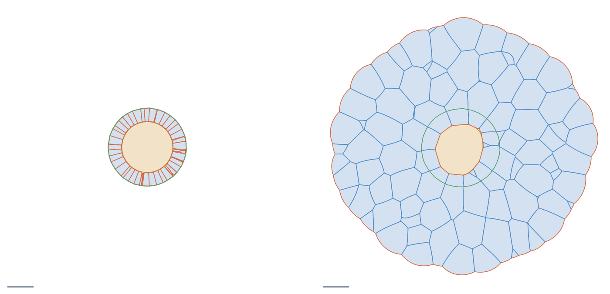
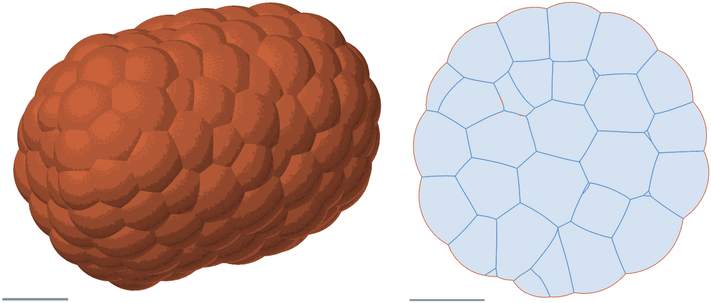
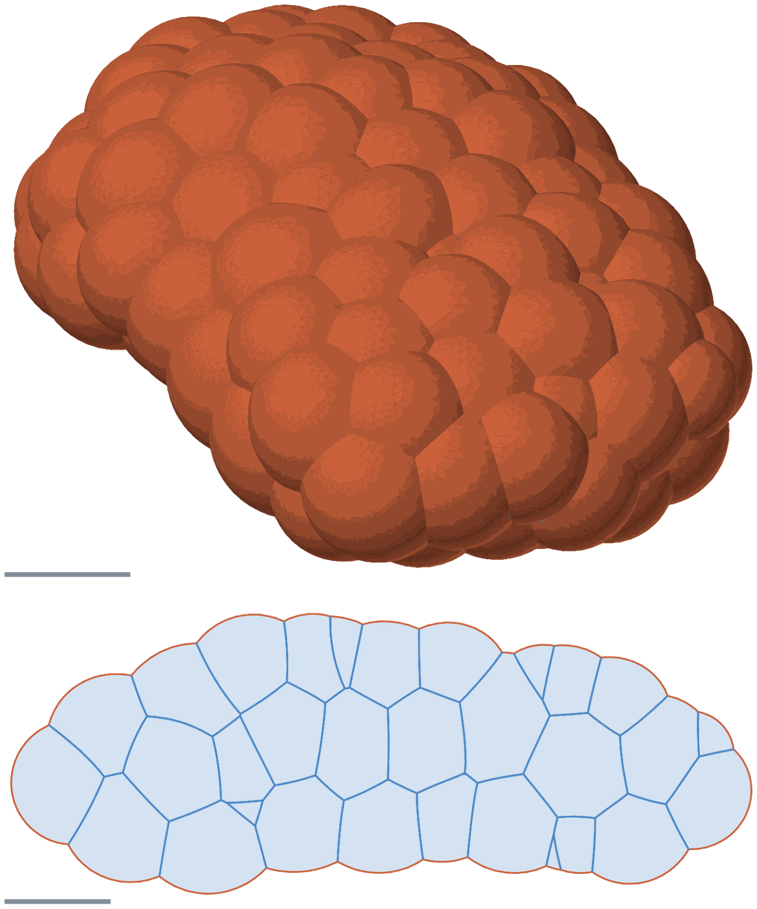
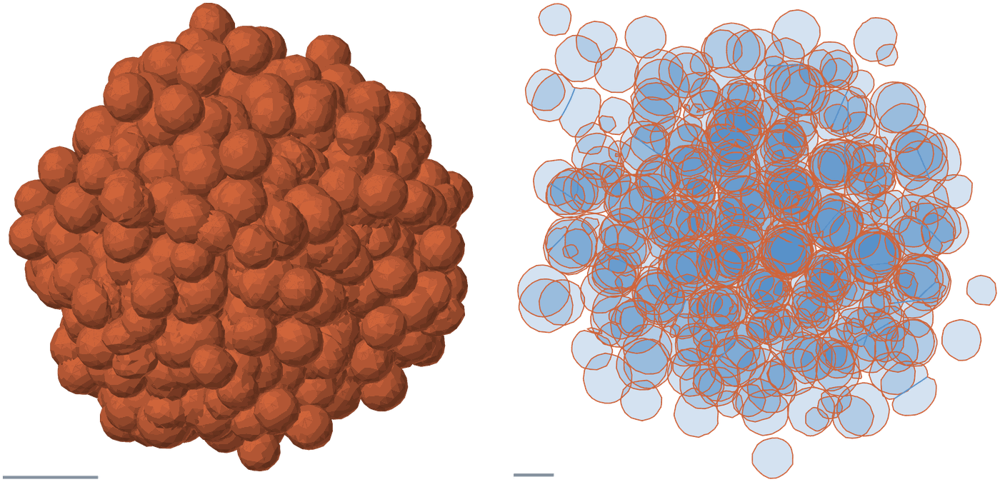

Examples#
Each example runs one of the parameter files shipped in parameters/, states the compile-time
configuration it needs, and describes what to look at in the output. All commands are run from
the build/ directory of a Release build (Installing SimuCell3D), unless stated otherwise.
The length of a run depends on the number of iterations (simulated time divided by the time step), the number of cells and the resolution of their meshes. The run times below were measured with 2.1.0, or a release candidate of 2.1 where marked, on 8-core cloud machines (GCP c2-standard-16, 8 threads) in October and November 2026; each example page says which run they come from.

The initial tissue of Fig. 3 of the paper, grown for 100,000 iterations.
Run time on 8 cores: More than 2 days as shipped; 6.2 h with growth off.
Configuration: Default build.

Weak against strong apical tension on the same vesicle (Fig. 3).
Run time on 8 cores: 11 min each for the paper’s protocol.
Configuration: Default build.

Relaxation of a tube of 192 cells (Fig. 1).
Run time on 8 cores: 3.7 h.
Configuration: Default build.

Relaxation of a flat sheet of 118 cells (Fig. 1).
Run time on 8 cores: 3.2 h (release candidate).
Configuration: Default build.

Growth and division of one cell; analytic checks of one and two cells.
Run time on 8 cores: More than 1 day per file (release candidate).
Configuration: Contact model 1 or 0: rebuild for each file. The analytic checks use the default build.

Exponential growth from one cell (Fig. 1e) to over 100,000 cells.
Run time on 8 cores: this page’s file, 30,000 cells in about 4 h (release candidate); the lab’s file at 2.5e-8 s, 125,000 cells in 37.7 h (2.1.0).
Configuration: Default build; the lab’s file needs contact model 1.
200 iterations of the 434-cell vesicle: a check that the build works.
Run time: About 2 min (4 cores).
Configuration: Default build.
A parameter sweep with the Python module.
Run time on 8 cores: Not measured.
Configuration: Default build with the Python module.
The same facts in one table:
Example |
What it shows |
Run time on 8 cores |
Compile-time configuration |
|---|---|---|---|
200 iterations of the 434-cell vesicle: a check that the build works |
about 2 min on 4 cores (not benchmarked on 8) |
default |
|
the initial tissue of Fig. 3 of the paper, grown for 100,000 iterations |
more than 2 days as shipped; 6.2 h with growth off |
default |
|
weak against strong apical surface tension on the same vesicle (Fig. 3) |
11 min each for the paper’s protocol; as shipped 6.5 h (monolayer, which loses its tissue) and more than 2 days (multilayer) |
default |
|
relaxation of a flat sheet of 118 cells |
3.2 h (release candidate) |
default |
|
relaxation of a tube of 192 cells |
3.7 h |
default |
|
growth and division of one cell under the full and the overdamped dynamics; analytic checks of one and two cells |
more than 1 day for each file (release candidate); the analytic checks under a minute |
contact model 1 or 0, dynamic model 0 or 1: rebuild for each file; default build for the analytic checks |
|
exponential growth from one cell (Fig. 1e) to over 100,000 cells |
this page’s file: 30,000 cells in about 4 h, 150,000 in about 53 h (release candidate); the lab’s file at |
default; the lab’s benchmark file needs contact model 1 and polarization mode 0 |
|
a parameter sweep with the Python module |
not measured |
default, with the Python module built |
The cross-version benchmark behind most of these numbers, and what it established about the limits of the model, is described in Benchmarks.